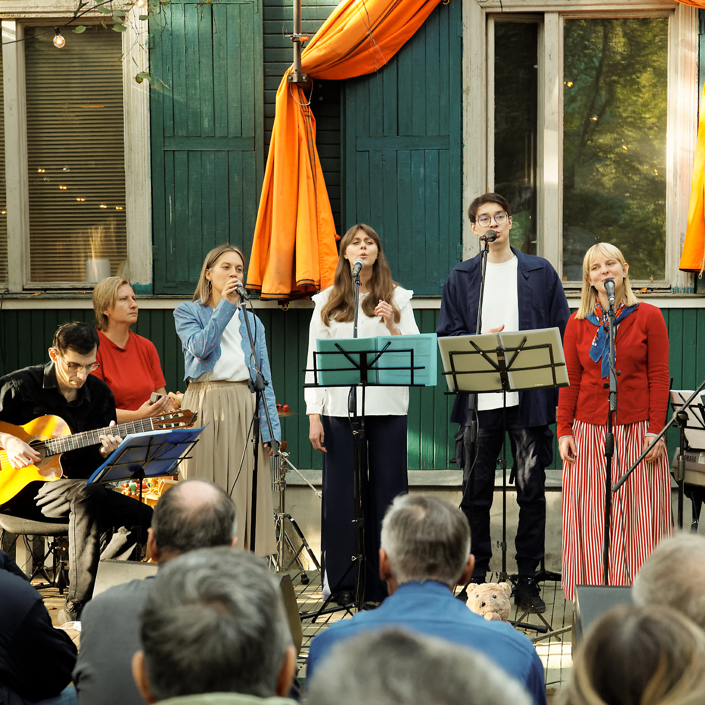
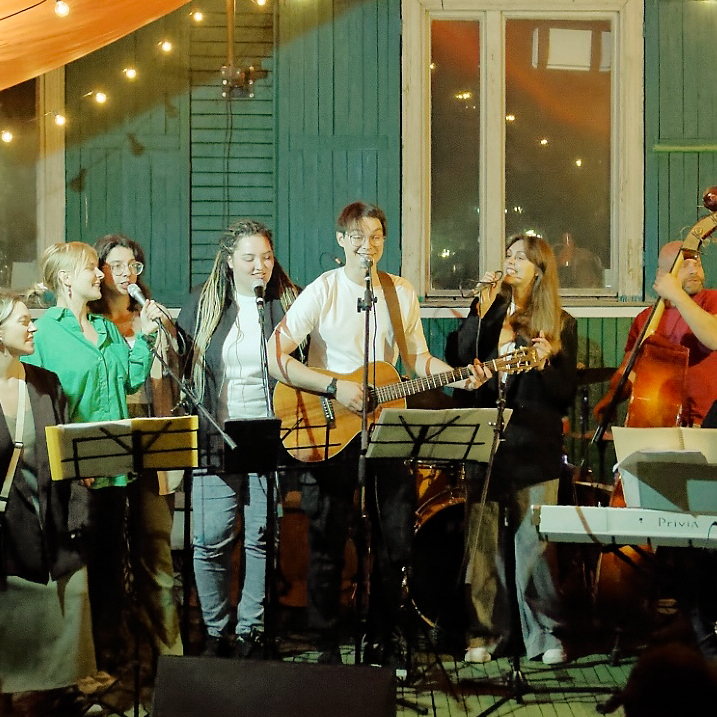
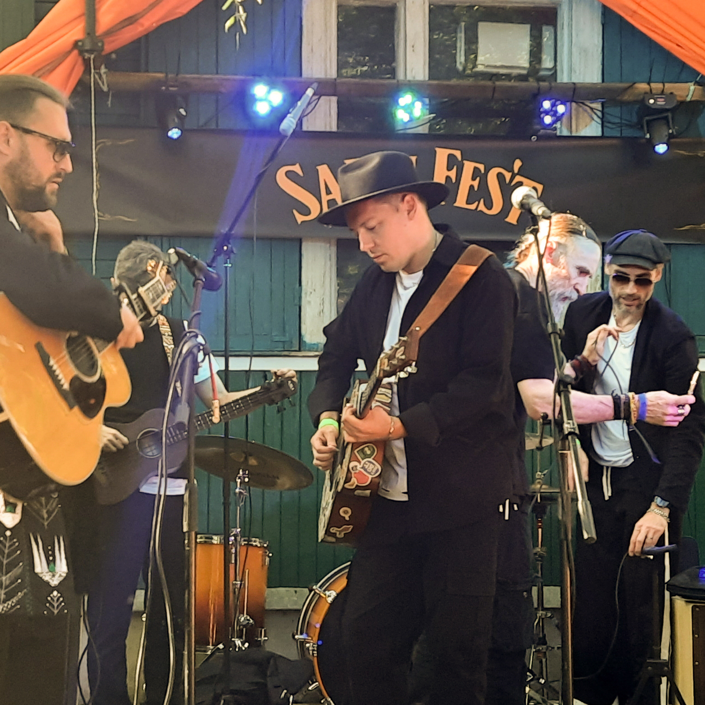

Галерея
показываем прошедшие мероприятия
«Палисадники в Переделкино» как место для музыкальных мероприятий существует с 2022 года. Все соскучились после пандемии, и Лена открыла калитку и пригласила старых друзей сыграть фестиваль. С тех пор площадка развивается и уже несколько летних сезонов подряд к нам приходят разные составы, коллективы и сообщества.

21 сентября 2025 | Открытие V сезона «Бардовского проекта»
Ансамбль «Бардовский проект» собрал такую праздничную программу: в первом отделении песни с диска «Пантомима» в честь 25-летия релиза. А во втором отделении песни Геннадия Гладкова — отметили 90 лет с года рождения автора

2 августа 2024 | День рождения Андрея Андроненко
Можно сделать и так: Андрей просто взял и под свой др собрал концертную программу с очень разными своими любимыми песнями. И исполнил их с друзьями и джаз-бэндом

20 июня 2026|Сабельфест
Большой праздничный полуюбилейный фестиваль в честь 45-го дня рождения Жени Сабельфельда. Необарды, Алексей Вдовин, Николай Гринько, Джин-тоник — это только треть лайн-апа. Целый день живой музыки и 200 гостей, это ли не настоящий опен-эйр?